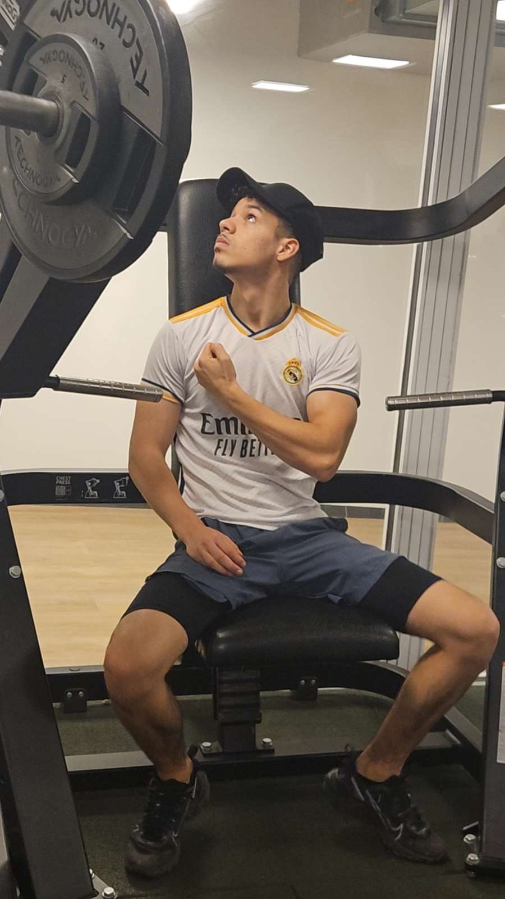

IT Architecture
Current
I am currently studying IT Architecture, where I work with web technology, programming, databases, design and project management.
Hello, I am
I am an 18-year-old IT Architecture student with an interest in technology, web development and digital solutions.
About MeHi! My name is Omar Bouchareb. I am 18 years old and currently studying IT Architecture.
Before starting my current education, I studied HHX at Vestskoven Gymnasium.
I am an active and motivated person who enjoys learning new things and developing myself. In my free time, I enjoy working out and staying active. I used to practice Taekwondo, where I achieved a black belt.
Taekwondo taught me a lot about discipline, patience, and working hard to achieve my goals. I also enjoy working and earning my own money because I like being independent and taking responsibility. When I am not studying, working, or training, I enjoy going out with my friends and spending time with my family.
Current
I am currently studying IT Architecture, where I work with web technology, programming, databases, design and project management.
Vestskoven Gymnasium
I completed my HHX education before starting my education in IT Architecture.


Employee
Working at Føtex gave me experience with customer service, teamwork, responsibility and working independently in a busy environment.
Driver
Working at DDM gave me experience with customer service, driving, route planning and working independently.
I am interested in technology and enjoy developing my knowledge within IT. I especially enjoy practical projects where I can turn an idea into something that works.
My goal is to continue improving my skills in web development, programming, databases and IT architecture.